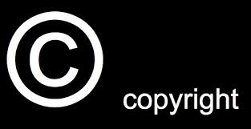

---
authors:
- admin
categories: [Docencia, Herramientas 2.0, Recursos Educativos]
date: 2016-09-16T08:26:17+02:00
draft: false
featured: false
image:
  caption: "Photo by Roman Kraft on Unsplash"
  focal_point: "Center"
projects: []
subtitle: Publicar o no publicar materiales docentes
title: "¡Mis apuntes, mi tesoro!"
tags: [Docencia, Herramientas 2.0, Recursos Educativos]
---


<div id="publicar-o-no-publicar-materiales-docentes" class="section level2">
<h2>Publicar o no publicar materiales docentes</h2>
<p>Los docentes tenemos multitud de material creado para utilizar en clase con los estudiantes. La manera de gestionar este material cambia persona a persona en un continuo entre el que tiene pánico a que alguien aproveche lo que ha preparado con tanto esfuerzo y, por tanto, tiene sus apuntes cerrados bajo siete llaves, y el profesor generoso que los ofrece a todo el mundo en un archivo editable y sin firma.</p>
<p>La aparición de Internet hace que el dilema ya no sea compartir o no con el compañero de departamento, sino compartir o no con la comunidad docente en cualquier parte del globo.</p>
<p>En mi opinión, compartir tiene muchas más ventajas que inconvenientes. Por ejemplo, podemos recibir feed-back que hace enriquecer el material, ampliamos la base de conocimiento disponible para cada área, lo que incentiva que se añadan nuevos materiales y además, podemos entrar en contacto con otros docentes y compartir experiencias.</p>
<p>Ahora bien, compartir los materiales no necesariamente implica <strong>ni una pérdida de control</strong> sobre su contenido, <strong>ni la falta de atribución sobre su autor</strong>. Cuando publicamos material online, podemos seleccionar el tipo de licencia que queremos establecer sobre su contenido. En esta entrada, voy a describir brevemente las <strong>opciones de licencia</strong> más populares. En la siguiente entrada, me centraré en las <strong>posibilidades para depositar</strong> el material.</p>
<div id="tipos-de-licencia" class="section level3">
<h3>Tipos de licencia</h3>
<div id="copyright" class="section level4">
<h4>Copyright</h4>
<div class="figure">

<p class="caption">img</p>
</div>
<p>Es el tipo de licencia tradicional. El autor retiene todos los derechos sobre el contenido que no se puede, por tanto, copiar, modificar ni reutilizar sin permiso expreso.</p>
<p>En España, no es necesario el registro de una obra para poder establecer un Copyright por lo que <strong>simplemente con indicarlo en el documento estaríamos</strong> estableciendo nuestros derechos sobre la obra.</p>
</div>
<div id="copyleft.-licencias-creative-commons" class="section level4">
<h4>Copyleft. Licencias Creative Commons</h4>
<div class="figure">

<p class="caption">img</p>
</div>
<p>Yo no le veo mucho sentido a compartir apuntes docentes con copyright, ya que se pierden muchas de las ventajas de hacerlo. Establecer un copyright puede ser lo más adecuado para aquellos casos en los que va a haber una explotación comercial del contenido. Si no es así, probablemente tenga más sentido utilizar una licencia menos restrictiva, como son las licencias <a href="http://creativecommons.org/">Creative Commons</a>. Creative Commons es una <strong>organización sin ánimo de lucro</strong> que ha establecido un procedimiento estandarizado para establecer de forma simple los derechos que queramos reservar sobre el contenido creado.</p>
<p><a href="http://creativecommons.org/choose/">Para establecer una licencia</a> simplemente tenemos que contestar a una serie de preguntas sobre la protección del material:</p>
<ul>
<li>¿Queremos permitir un uso comercial del contenido?</li>
<li>¿Queremos permitir que otros hagan modificaciones sobre el contenido?</li>
<li>Si se hacen esas modificaciones, ¿queremos imponer que se utilice el mismo tipo de licencia para el material?</li>
</ul>
<p>Según la respuesta a estas preguntas, tenemos seis tipos de licencias:</p>
<div class="figure">

<p class="caption">img</p>
</div>
<p>Siempre que se reconozca al autor de la obra, el material puede ser redistribuído y modificado sin restricciones por finalidad.</p>
<div class="figure">

<p class="caption">img</p>
</div>
<p>Se debe reconocer al autor y se puede modificar o adaptar el material pero la licencia de la nueva obra debe ser igual.</p>
<div class="figure">

<p class="caption">img</p>
</div>
<p>Se debe reconocer al autor. La obra no puede modificarse y debe reproducirse en su totalidad.</p>
<div class="figure">

<p class="caption">img</p>
</div>
<p>Se debe reconocer al autor. La obra puede modificarse o adaptarse, pero no debe utilizarse para fines comerciales.</p>
<div class="figure">

<p class="caption">img</p>
</div>
<p>Se debe reconocer al autor. La obra no debe utilizarse para fines comerciales y, si se modifica, debe redistribuirse bajo la misma licencia.</p>
<div class="figure">

<p class="caption">img</p>
</div>
<p>La más restrictiva. Se debe reconocer al autor. No se permite la adaptación, ni el uso con fines comerciales.</p>
<p>La elección de una licencia puede modificarse en cualquier momento, aunque debemos tener en cuenta que no podremos limitar el acceso al que hubiera accedido al material con una licencia anterior.</p>
</div>
</div>
<div id="el-registro-de-la-licencia" class="section level3">
<h3>El registro de la licencia</h3>
<p>Como decía, en España no es necesaria una inscripción para poder mantener los derechos de autor sobre una obra. Sin embargo, la inscripción tiene una carácter “probatorio” en caso de conflicto legal. La mayor protección la ofrece el <a href="http://www.mecd.gob.es/cultura-mecd/areas-cultura/propiedadintelectual/registro-de-la-propiedad-intelectual.html">Registro de la Propiedad Intelectual</a> pero también tiene un coste. Otra posible opción para quien le interese proteger en mayor medida su material es la iniciativa <a href="http://www.safecreative.org/">Safe Creative</a> que provee protección de prueba frente a plagios y usos no autorizados. Es válida en todos los países firmantes del Convenio de Berna (ONU) y básicamente lo que hace es establecer un registro de un determinado contenido que se atribuye a un determinado autor en un momento de tiempo. Además, se pueden registrar automáticamente contenidos desde Dropbox, Google Drive o un feed de un blog:</p>
<p><a href="http://www.safecreative.org/userfeed/1509270198503">Registrado en Safe Creative</a></p>
<p>¿Y vosotros? ¿Qué hacéis con vuestro material?</p>
</div>
</div>
